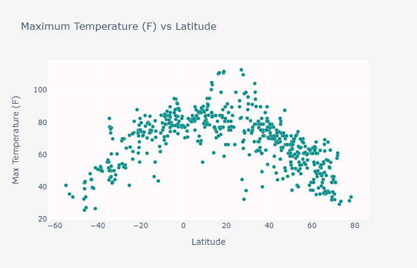

About Weather Goose:

Geographic determinants of weather have major implications on various societal and animal behaviors. For example, some birds like geese migrate south away from their breeding sites during certain months to avoid the cold, among other factors. Inspired by naturally occuring phenomena such as the classic migration patterns of birds, the Weather Goose project was created to analyze several weather patterns based on the distance from the equator during the winter.
In order to accomplish this goal, OpenWeatherMap API was used to aggregate weather data from 500 cities. Then, visualizations for temperature, humidity, wind, and cloud coverage were created to analyze possible correlation between the metrics for weather and the distance from the equator using Plotly in Jupyter Notebook.